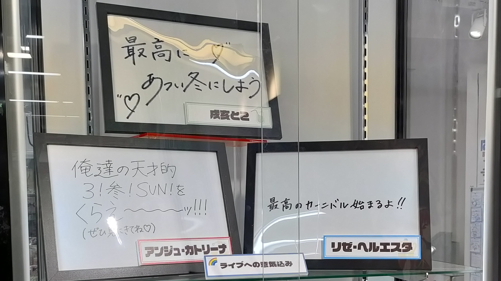
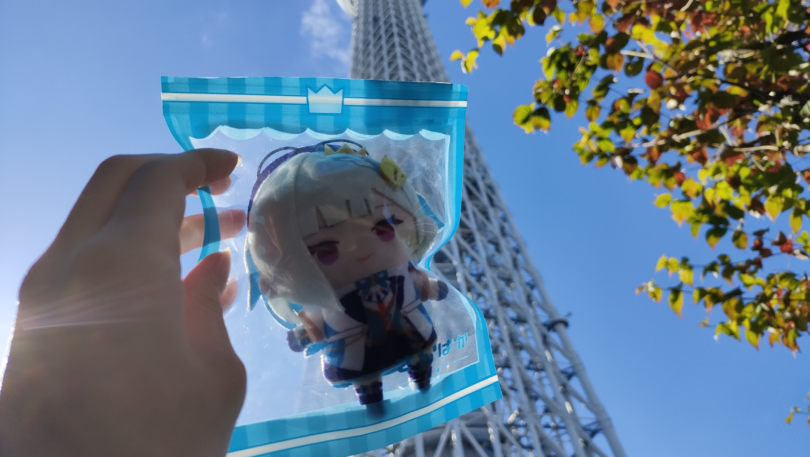
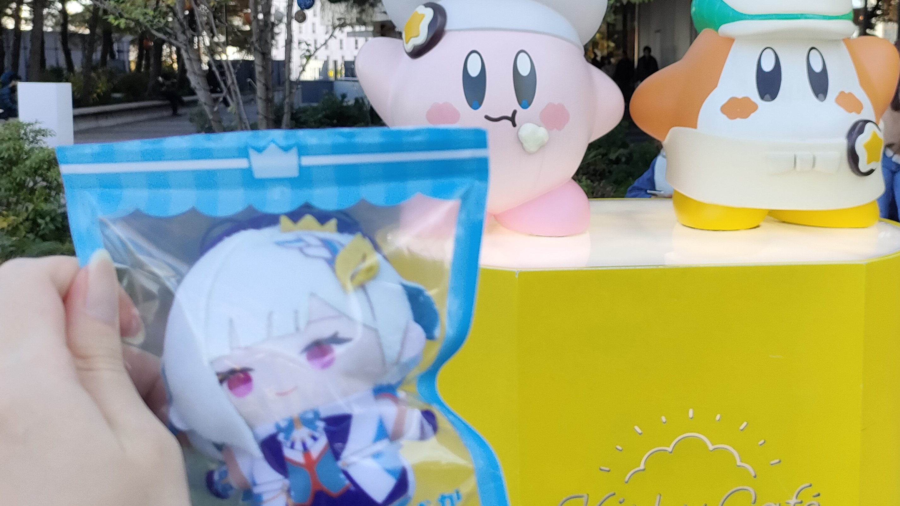
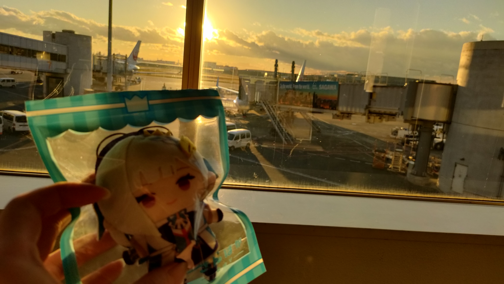

さんばかライブ旅レポ 2日目（12/07）
| Time | Ivent |
|---|---|
| 6:30 | 起床 |
| この日に何をやるかほとんど考えていなかったため予定を立てる。 | |
| 0.駅広告を見に行く | |
| 1.コトブキヤに行く | |
| 2.スカイツリーに行く | |
| 京都の清水寺枠 | |
| 3.お土産を買う | |
| スカイツリーに近い浅草と空港 | |
| 4.ウェンディーズに行く | |
| アンジュの案件配信で気になっていた You Tube | |
| 移動時間を含めるとほぼノンストップの予定であった | |
| 8:45 | ホテルをチェックアウト | 9:00 | 飛田給駅に到着 |
| 有志の駅広告の写真を撮る2 | |
| 10:30 | 秋葉原 |
| イヤホンを少し見回るなどした | |
| 11:00 | 店の前に人だかりが出来ていたため断念しかけたが |
| そもそも開店前であったことに気が付く。 | |
| コトブキヤでメッセージとパネルと見る | |
|  | |
| 11:30 | スカイツリー・ソラマチに行く |
| 夏には何度か来た事があるが冬に来るのは初めて | |
| クリスマスっぽい装飾がされていた | |
|  | |
|  | |
| ソラマチは迷子になるリスクが最も高い | |
| 12:30 | 浅草でお土産のお菓子を買う |
| 14:00 | ウェンディーズ五反田店に到着 |
| 提供時間が分からず朝立てた計画よりも遅れていたためテイクアウトに変更 | |
| 20秒で受け取りが完了し、ここで突然予定を巻く | |
| 都合よく快速車両に乗れたことで更に予定を巻く | |
| 14:30 | 予定より1時間早く羽田空港に到着 |
| 流石に早すぎた | |
| 時間に余裕があるので座れる場所を探して食べた | |
| ふつうにおいしかったです | |
| 15:30 | シュガーバターサンドのお店のおねえさんがかわいかった |
| ちゃんと買いました | |
|  | |
| サングラスが無かったらかなりまぶしい夕日 | |
| ピントはぱぺちゃんでもなく飛行機でもなくたぶん窓枠に吸われてる | |
| 16:30 | 羽田空港を出発 |
| 18:30 | 山口宇部空港に到着 |
| 実家に戻っていろいろ片付ける | |
| 24:00 | 就寝 |
| 2日分の疲労ですんなり眠れた |